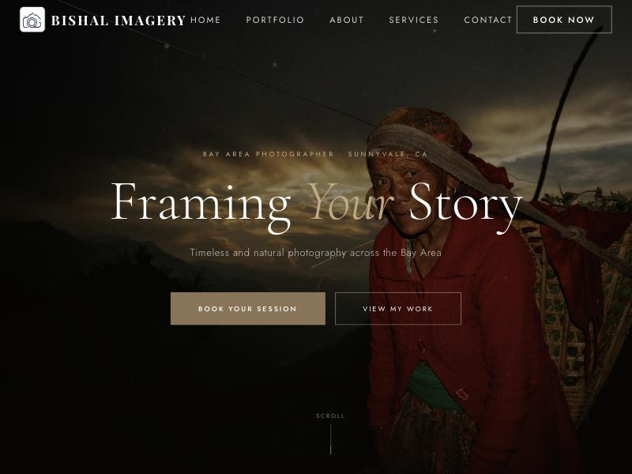
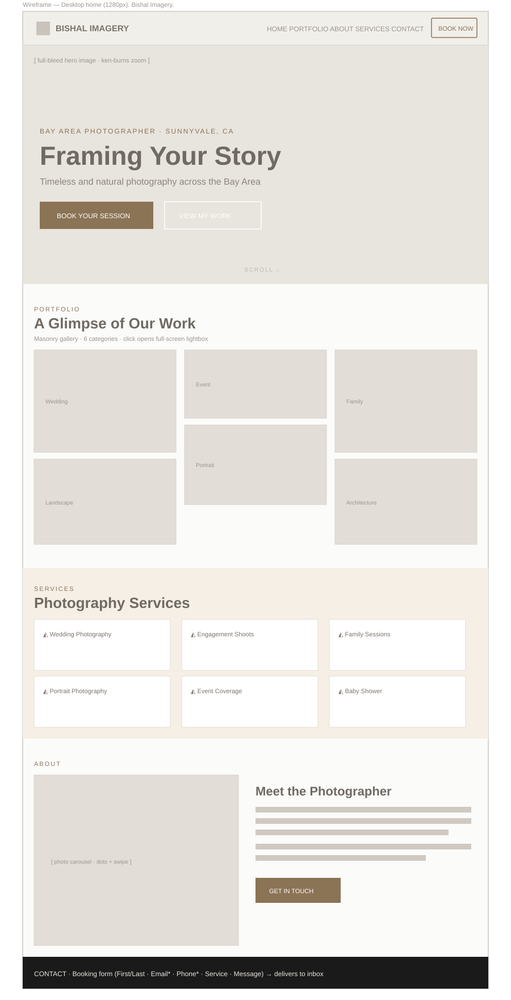
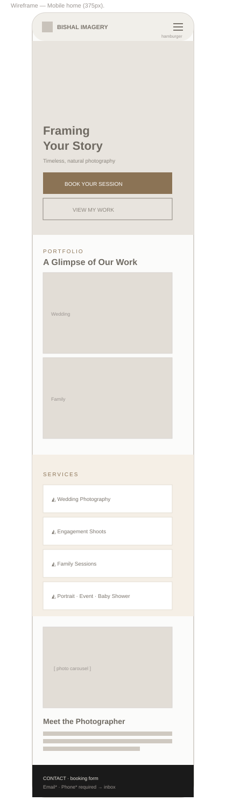
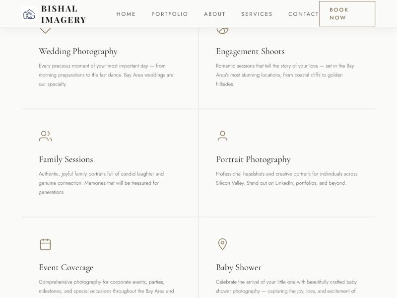
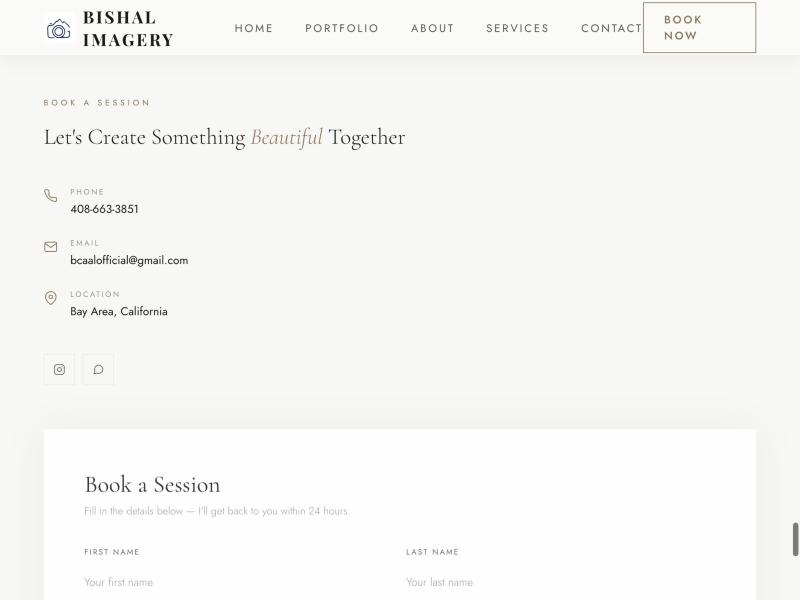

Bishal Imagery —
Photographer Website
A bookings-ready website for a Bay Area photographer: brand-led design, a gallery that lets the work breathe, and an inquiry form that turns visitors into leads.

The problem
Bishal shoots weddings and portraits across the Bay Area, but had no professional site and no online path from "interested" to "inquiry." A working photographer with no way to be found, or booked. The brief came down to three jobs:
Show the work
Present the photography like a gallery would: large, uncluttered, immersive.
Be discoverable
Rank for "Bay Area photographer" with a credible, locally optimized presence.
Capture bookings
Turn a curious visitor into a booking inquiry with zero friction.
Timeless, not trendy, so the photos stay the hero.
A warm, earthy palette and an editorial serif and sans pairing set a calm, gallery-like tone. Restraint was the point: the interface recedes so the imagery carries the emotion.
One scroll, mapped to how a client decides.
Hero → Portfolio → Services → Testimonials → About → Booking. Low-fidelity wireframes locked the structure and spacing before a single photo went in. Toggle the views:


Clear services, generous space.
Six offerings on an airy grid, easy to scan and never crowded: each a soft icon and one honest line of copy.

The form had one job: don't lose the lead.
On a static site there's no server to catch a submission, so a form can look like it works while silently dropping every message. I wired delivery to a form service, made email and phone required, and added real success and error states. Then I tested delivery end to end.

Drag to see what changed.
The most meaningful improvements weren't cosmetic. Pick a change and drag the handle (or focus it and use the arrow keys).
Also launched from a "Site not found" 404 to live on a custom domain with HTTPS and structured data.
Outcome
A real business, online and taking inquiries.
"Add a one-line client testimonial here" — Bishal, Bishal Imagery